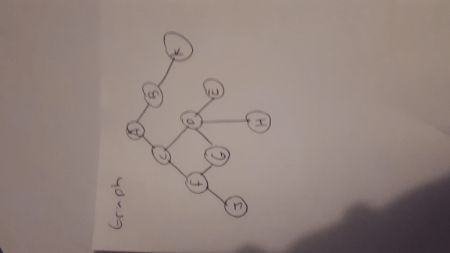
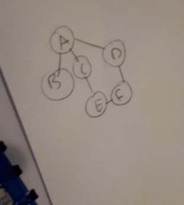

Traversal's are ways computer systems travel round and collect data within certain data structures
Travels around the outside gathering the left-most values
Sorry for poor quality. Basically it gathers the most left, and when there are no more nodes, it backtracks.
The order in the gif above is: A,C,F,J,G,H,E--->bracktrack to A --> B,K
Depth first uses a stack to store data
Visit all nodes connected to current node. You can start from anywhere, but it's best to start from left.
You can work your way down, when starting at the left.
The above would be: A,B,C,D,E,F